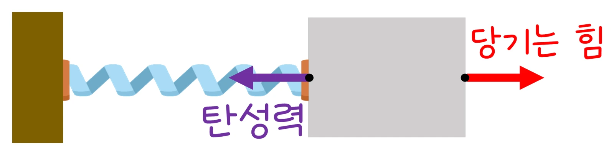
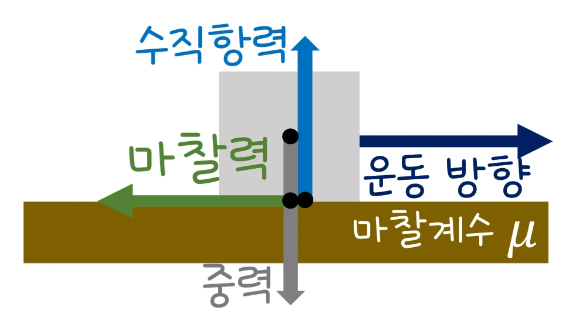

중1 과학 · 힘의 작용 · 웹툰 8화 「늘어나고 미끄러지는 힘, 탄성력과 마찰력」
실험에서 용수철에 매다는 힘을 바꿔 늘어난 길이를 재고, 바닥 재질과 누르는 힘을 바꿔 마찰력을 쟀습니다. 용수철은 힘에 정비례해 늘어났고(k = 2.5 N/cm), 마찰력은 누르는 힘에 비례하며 재질에 따라 달랐습니다. 두 힘의 규칙을 정리합니다.
실험 데이터 되짚기
① 용수철(k = 2.5 N/cm)에 매다는 힘과 늘어난 길이, ② 누르는 힘 40 N일 때 바닥 재질별 마찰력입니다.
| 매다는 힘 (N) | 5 | 10 | 15 | 20 |
|---|---|---|---|---|
| 늘어난 길이 (cm) | 2 | 4 | 6 | 8 |
| 힘 ÷ 길이 (N/cm) | 2.5 | 2.5 | 2.5 | 2.5 |
힘–늘어난 길이 그래프는 원점을 지나는 직선, 힘 ÷ 길이 = 탄성계수 k로 일정합니다. 마찰 실험(N = 40 N)에서는 고무 28 N, 강철 24 N, 나무 12 N, 얼음 1.2 N — 마찰력 ÷ N이 재질마다 정해진 값(마찰계수 μ)이었습니다.
탄성력은 늘어나거나 눌린 물체가 원래 모양으로 돌아가려는 힘입니다. 용수철은 늘어난 길이에 비례하는 힘을 냅니다(훅의 법칙 F = k·x). 탄성계수 k는 용수철의 굵기·재질·감긴 수로 정해지는 그 용수철의 성질이라 힘을 바꿔도 변하지 않습니다. 훅의 법칙은 탄성 한계 안에서만 성립합니다 — 너무 세게 당기면 영구히 늘어나(소성 변형) 비례 관계가 깨집니다. 용수철저울·체중계·자동차 서스펜션·고무줄·트램펄린·활이 탄성력을 이용합니다.
교재 그림
당기는 힘과 탄성력

물체를 오른쪽으로 당겨 용수철이 늘어나면, 용수철은 원래 길이로 돌아가려고 반대쪽(왼쪽)으로 탄성력을 작용합니다.
움직여 보기
추를 하나씩 더 달면 용수철은?
5 N 추를 하나 더 달 때마다 용수철은 2 cm씩 똑같이 늘어납니다. 그래서 그래프는 원점을 지나는 곧은 선이고, 힘 ÷ 늘어난 길이 = 2.5 N/cm(이 용수철의 탄성계수)로 언제나 같습니다. (탄성 한계 안에서만)
마찰력은 맞닿은 두 면 사이에서 운동을 방해하는 힘으로, 면을 누르는 힘(수직항력 N)에 비례합니다(f = μ·N). μ(마찰계수)는 두 면의 재질로 정해집니다: 고무 0.70, 강철 0.60, 나무 0.30, 얼음 0.03(운동 마찰 대표값). 마찰력은 접촉 면적과 무관하고 누르는 힘과 재질에만 좌우됩니다. 멈춘 물체를 움직이기 시작할 때의 정지 마찰력(최대)은 움직이는 동안의 운동 마찰력보다 조금 커서, 밀기 시작할 때가 가장 힘듭니다.
등산화 밑창·타이어 무늬·성냥·브레이크는 마찰을 늘리고, 스케이트 날·윤활유·눈길에 모래 뿌리기(반대로 늘림)는 마찰계수를 바꾸는 일입니다.
교재 그림
바닥 위 물체에 작용하는 힘

마찰력은 운동 방향과 반대로, 두 면이 닿은 곳에서 작용합니다. 크기는 바닥이 떠받치는 수직항력과 마찰계수 μ로 정해집니다(f = μN).
움직여 보기
바닥 재질과 누르는 힘에 따라 마찰력은?
일정한 빠르기로 끌면 당기는 힘(빨강)과 마찰력(초록)이 같아 저울 눈금이 곧 마찰력입니다. 누르는 힘을 2배로 하면 마찰력도 2배, 바닥이 미끄러울수록(얼음) 작아집니다. N = 40 N이면 고무 28 N, 강철 24 N, 나무 12 N, 얼음 1.2 N (운동 마찰 대표값).
마찰계수는 표면의 거칠기·습기·기름·온도에 따라 크게 달라지는 값이라 표의 값은 대략적인 대표값입니다(강철끼리 기름을 치면 0.1 이하, 얼음은 온도에 따라 0.02~0.1). 아주 빠른 속도나 매우 무거운 하중에서는 f ∝ N이 정확히 성립하지 않습니다. 이 실험의 용수철은 탄성 한계 안에서만 당긴다고 가정했습니다.
k: 탄성계수 (이 용수철 2.5 N/cm) · μ: 마찰계수 (재질) · N: 수직항력
“그건 ‘탄성력’ 때문이야! 변형된 물체가 원래 모양으로 되돌아가려는 힘을 탄성력이라고 해.”
웹툰 8화 · 민재: “용수철을 당겼다가 놓으면 왜 다시 원래대로 돌아가지?” 지유: “고무줄이나 트램펄린, 활도 다 탄성력을 이용한 거네!”
“그래서 등산화나 자동차 타이어에 울퉁불퉁한 무늬가 있는 거구나! 미끄러지지 않게 마찰력을 늘리려고!”
웹툰 8화 · 노바: “접촉면이 거칠수록, 그리고 누르는 힘이 클수록 마찰력이 커져.” 반대로 스케이트 날이나 윤활유는 마찰력을 줄인다.
x = F ÷ k = 25 ÷ 2.5 = 10 cm. F = k·x = 2.5 × 3 = 7.5 N. 탄성 한계 안이라고 가정합니다.
40 N: f = 0.30 × 40 = 12 N. 80 N: 24 N(2배). 접촉 면적을 2배로 해도 마찰력은 그대로 12 N — 마찰력은 면적과 무관하고 누르는 힘과 재질에만 좌우됩니다.